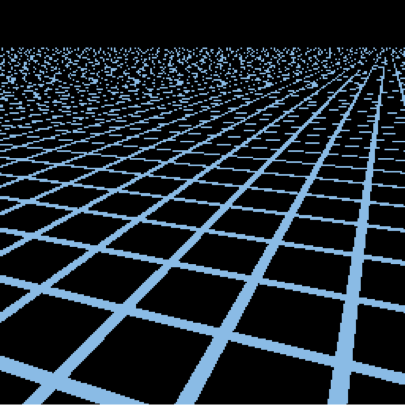
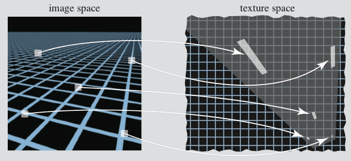
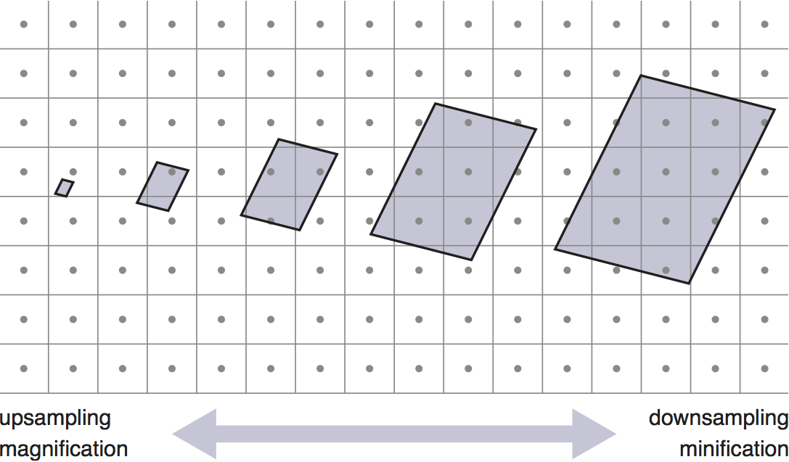
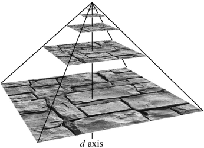
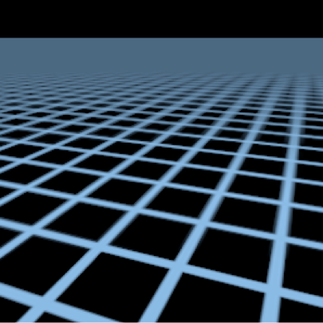
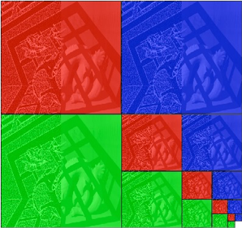

CS 4621: Lecture 5
Textures (Part 2)
- Textures are a way to pass image data from Javascript to WebGL.
- GLSL shaders (almost always the fragment shader) have access to this image data through samplers.
- This can return the color of a pixel, or blended colors from several pixels.
Exhibits
Interlude: Image sampling and mipmaps
-
Textures contain discrete pixels (called texels), but they are referenced using continuous uv coordinates. What if a UV-coordinate doesn't fall right on a texel?
-
Simplest solution: just return the nearest texel.
- This is easy to implement, and works fine in some cases, but can cause aliasing problems in others.

- Another idea: linearly interpolate between the nearest texels.
- We need to do this for both the u and v coordinates, so take a weighted average of up to 4 pixels.
- This is called bilinear interpolation.
- This looks a little better, but the aliasing problems don't go away.
- What is going on here?

- One pixel in the image plane may map to many texels. Each texel in the pixel's footprint should contribute to the final color.
- Also, some pixels may map to a space smaller than a texel (this doesn't contribute to aliasing problems, though).
- We need to account for the first case (minification) and the second case (magnification) when using textures in WebGL.

-
Mipmaps are a cheap way to reduce aliasing artifacts when displaying minified textures.
- MIP stands for "Multum in Parvo" meaning "much in little" or "many in small places."
-
Basic idea: keep several copies of the image, each resampled to different sizes.

[Akenine-Moller and Haines 2002]
- When we need to look up a pixel value, we can estimate the size of that pixel's footprint on the texture.
- Then, we can use that information to decide which level of the texture to sample.
-
We can even linearly sample between nearby levels.
- If used together with bilinear interpolation on adjacent layers, this is called trilinear interpolation.
-
This method effectively blurs out the aliasing artifacts.

-
Notice that this increases the memory footprint of an image by 1/3.

[Kavita Bala]
- Since this is a commonly used tool, WebGL does most of this for you.
Exhibits, Continued